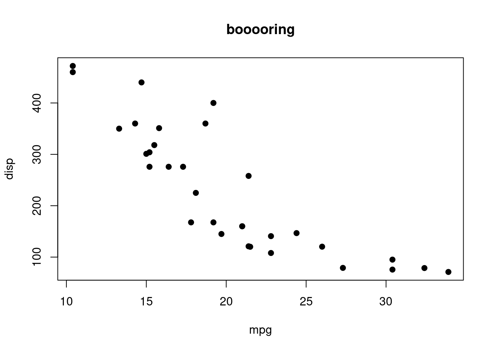
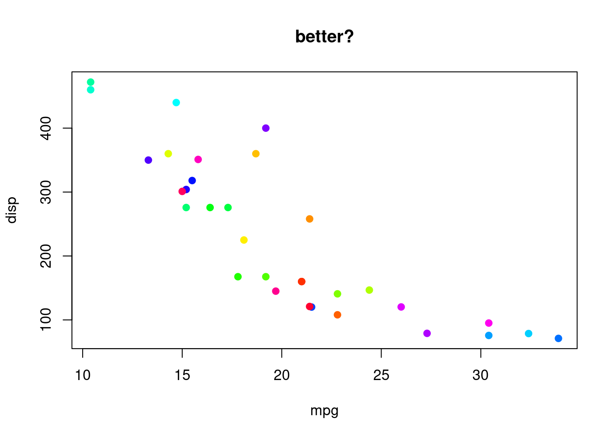

Traits data in R
2024-08-07
1 Preamble
1.1 Mega-disclaimer
English people have a horrible saying: “there’s more than one way to skin a cat” (which, funnily enough, the origin of this idiom and taxidermists might disagree) which applies to this whole workshop. Here you’ll have my way of looking at morphological traits and doing disparity analyses that is not by any means THE way to do it. Hopefully by the end of the workshop you’ll feel comfortable enough exploring it your way! I’ve also tried to add contradiction throughout the workshop when my claims are not widely shared. Make sure you have a look at these!
1.2 Requirements
1.2.1 General computer level
In this workshop I will assume you are already familiar with how your computer works basically. You know how to do the following:
- Open a file with a specific software (sometimes that’s not just double clicking)
- Locate a file in your computer (you know what a path is)
1.2.1.1 Required software
R(the latest version)1- A plain text editor (NOT WORD!)
- recommended: an IDE (integrated development environment). For example Rstudio or Sublime Text.
1.2.2 R level
I will assume you are already familiar with basic R. The basic notions that I’ll assume you know are:
- What is a package (e.g.
apeordispRity) - What is an object (e.g.
this_object <- 1) - What is an object’s class (e.g. the class
"matrix"or"phylo") - What is a function (e.g. the function
mean(c(1,2))) - How to access function manuals (e.g.
?mean)
1.2.2.1 Required packages
For this tutorial we will be using the packages ape (Paradis and Schliep (2019)), dispRity (Guillerme (2018)) and treats (Guillerme (2024)):
required_packages <- c("ape", # for analysing phylogenetic data
"dispRity", # for disparity analyses
"treats") # for some trees and traits plots
install.packages(required_packages)Note that you can also use the excellent following packages for more specific tasks not covered here:
Claddisfor analysing discrete morphological characters (Lloyd (2018))paleotreefor analysing palaeo phylogenetic data (Bapst (2012))strap(Bell and Lloyd (2015)) ordeeptime(Gearty (2024)) for plotting nice geological time scalespalaeoverse(Jones et al. (2023)) for wrangling palaeo dataMorpho(Schlager (2017)) orgeomorph(Baken et al. (2021)) for analysing geometric morphometric data
Let’s get into it.
1.3 Glossary
Trait data is going to be the generic term here to designate any type of data that describe some measurable features of a specimen, species, group, etc. Here is a glossary table from Guillerme, Puttick, et al. (2020) that specify what I mean throughout this book (and check Mammola et al. (2021) if you’re more coming from ecology).
| Mathematics | Ecology | Macroevolution | This book |
|---|---|---|---|
| Matrix (\(n \times d\)) with a structural relation between rows and columns | Functional space, morphospace, etc. | Morphospace, traitspace, etc. | traitspace |
| Rows (n) | Taxa, field sites, environments, etc. | Taxa, specimen, populations, etc. | observations |
| Columns (d) | Traits, Ordination scores, distances, etc. | Traits, ordination scores, distances, etc. | dimensions |
| Matrix subset (\(m \times d\); \(m \leq n\)) | Treatments, phylogenetic group (clade), etc. | Clades, geological stratum, etc. | group |
| Statistic (i.e. a measure) | Dissimilarity index or metric, hypervolume, functional diversity, etc. | Disparity metric or index | space occupancy measure |
| Multidimensional analysis | Dissimilarity analysis, trait analysis, etc. | Disparity analysis, disparity-through-time, etc. | multidimensional analysis |
Note that here traits are treated as unidimensional (i.e. one column = one trait) but it doesn’t need to be the case! For example you can have a multidimensional trait that is described using multiple numbers (a multidimensional trait), for the trait “location” can be described using both latitude and longitude (a 2D trait).
1.4 How does this work?
Throughout the manuscript you will see some different coloured zoned that you can use to either to load your own data (in blue), catch up if you feel a bit behind (orange), or play around with different options (green).
1.4.1 Use your own data
USE YOUR DATA: load your own data!
## Read your favourite csv file (you'll need to set up the path yourself!)
continuous_data <- read.csv("path_to_my_super_serious_dataset.csv")1.4.2 Catching up
CATCHING UP ZONE: loading some example data!
## Loading some data
data(mtcars)
## Giving the data the correct name so that you can follow
my_data <- mtcars1.4.3 Tinker time!
TINKER TIMES: play around with this very complicated plot.
## Plot data
plot(my_data[, c(1,3)], col = "black", pch = 19, main = "booooring")
Can you find a solution to make it less boring?
[Click to expand the solution]:
## Plot data
plot(my_data[, c(1,3)], col = rainbow(nrow(my_data)), pch = 19, main = "better?")
1.5 Help me!
Whether you are doing this workshop online or in person, please help me improve this whole workshop:
- Something is not working
- Something is unclear
- There’s a typo (realy)!
You can just shout at me or drop me an email!
References
Baken, E. K., M. L. Collyer, A. Kaliontzopoulou, and D. C. Adams. 2021. “Geomorph V4.0 and gmShiny: Enhanced Analytics and a New Graphical Interface for a Comprehensive Morphometric Experience.” Methods in Ecology and Evolution 12: 2355–63.
Bapst, David W. 2012. “Paleotree: An R Package for Paleontological and Phylogenetic Analyses of Evolution.” Methods in Ecology and Evolution 3 (5): 803–7.
Bell, Mark A., and Graeme T. Lloyd. 2015. “Strap: An R Package for Plotting Phylogenies Against Stratigraphy and Assessing Their Stratigraphic Congruence.” Palaeontology 58: 379–89. https://doi.org/10.1111/pala.12142.
Gearty, William. 2024. Deeptime: Plotting Tools for Anyone Working in Deep Time. https://CRAN.R-project.org/package=deeptime.
Guillerme, Thomas. 2018. “DispRity: A Modular R Package for Measuring Disparity.” Methods in Ecology and Evolution 9 (7): 1755–63.
Guillerme, Thomas. 2024. “Treats: A Modular R Package for Simulating Trees and Traits.” Methods in Ecology and Evolution 15 (4): 647–56.
Guillerme, Thomas, Mark N Puttick, Ariel E Marcy, and Vera Weisbecker. 2020. “Shifting Spaces: Which Disparity or Dissimilarity Measurement Best Summarize Occupancy in Multidimensional Spaces?” Ecology and Evolution 10 (14): 7261–75.
Jones, Lewis A., William Gearty, Bethany J. Allen, Kilian Eichenseer, Christopher D. Dean, Sof<U+00ED>a Galv<U+00E1>n, Miranta Kouvari, et al. 2023. “Palaeoverse: A Community-Driven R Package to Support Palaeobiological Analysis.” Methods in Ecology and Evolution, 1–11. https://doi.org/10.1111/2041-210X.14099.
Lloyd, Graeme T. 2018. “Journeys Through Discrete-Character Morphospace: Synthesizing Phylogeny, Tempo, and Disparity.” Palaeontology 61 (5): 637–45.
Mammola, Stefano, Carlos P Carmona, Thomas Guillerme, and Pedro Cardoso. 2021. “Concepts and Applications in Functional Diversity.” Functional Ecology 35 (9): 1869–85.
Paradis, Emmanuel, and Klaus Schliep. 2019. “Ape 5.0: An Environment for Modern Phylogenetics and Evolutionary Analyses in R.” Bioinformatics 35: 526–28. https://doi.org/10.1093/bioinformatics/bty633.
Schlager, Stefan. 2017. “Morpho and Rvcg – Shape Analysis in R.” In Statistical Shape and Deformation Analysis, edited by Guoyan Zheng, Shuo Li, and Gabor Szekely, 217–56. Academic Press.
Always update your software. If you do that already, thank you very much. If you don’t, have a thought for the software developers that try very hard to correct/improve/update your favourite software. They don’t do it for no reason (and no, it’s not that hard to click on “update” button).↩︎